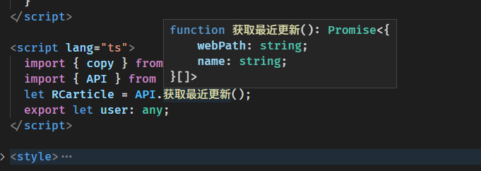
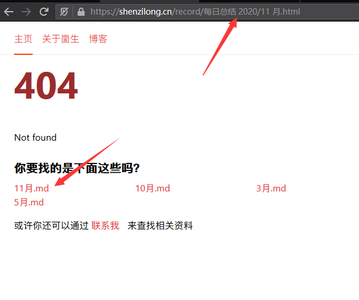
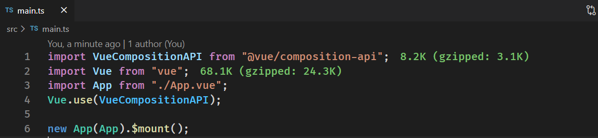

2020/11
每日总结
今天（2020/11/5）将文档改成了基于
思源笔记
实现的了，之后应该会提高在自己博客上写文章的频率了。
之前都是在 我来 上写，毕竟那里的体验要好很多。但现在使用思源再实现双链之类的功能也很棒，虽然还比不上 我来 但终究还是很有必要在自己的平台输出的。
我的博客改为使用思源还有的一点小缺陷
引用其他块的渲染还没写好（2020/11/8 号解决了）
还有嵌入内容块的渲染需要实现
加速度传感器与角速度传感器（陀螺仪）导致的窃听漏洞
相关文章 https://www.leiphone.com/news/202002/rVLRlq5oqDFtIanl.html
现在最蛋疼的一点是在没有 root 的情况下好像没有办法禁用掉 app 对相关数据的获取。
根据 https://note.qidong.name/2018/03/hugo-mathjax/ 这篇文章给博客加上了
公式渲染的功能
lute 通过
lute.SetHeadingAnchor(true);
可以配置渲染 h 系列的标签的时候加入一个 a 标签链接到该标题 效果如图

今天在使用
const a ??= b
这种语法的时候遇到了一些问题首先是没有添加
"@babel/plugin-proposal-nullish-coalescing-operator"
插件。
但添加之后还是报错
Syntax Error: SyntaxError: This experimental syntax requires enabling the parser plugin: 'nullishCoalescingOperator' (123:21)
这就很难受了， https://github.com/dcloudio/uni-app/issues/1660 这里有和我一样踩坑的人。但还没有找到合适的解决方案，只能在 uni-app 项目中先放弃使用该语法了
这篇文章的主要思路其实就是 第一次 执行代码遇到异步点的时候执行异步函数然后 throw 中断下面的代码，然后拿到结果后再执行一次。
这个体验还是不太行的实现起来也太复杂
我在知乎提了一个问题 https://www.zhihu.com/question/429221892
xml:base="https://shenzilong.cn/关于/赞助.html"
这样的属性可以设置 XML 的 base 路径，今天给我的
feed
加上了这样的路径 ，但不知道是不是我使用的 rss 阅读器的问题，他好像还是没有办法正确识别。
例如
<a href="#标题1">
这样的路径他会识别为
https://shenzilong.cn/关于/赞助#标题1
这样的路径。
有时候不需要什么「分布式」，前后端「项目分离」。
只是想可以方便调用一个接口、不去写接口文档、还有有完善的方法类型提示而已。
何必那么复杂呢。......
这里提供超轻量级的远程调用，完备的类型提示！
codesandbox 体验地址
codesandbox 的类型提示还不太行，本地开发是没有问题的

0x00 服务端方法
typescript
// apis/time.ts
export function currentTime() {
return Date.now();
}
export function currentTime2(toLocaleString: boolean) {
if (toLocaleString) {
return new Date().toLocaleString();
} else {
return Date.now();
}
}
这里随便写了几个方法
0x01 聚合
typescript
// apis/index.ts
export * from "./time";
约定俗称的用一个
index.ts
文件将其他文件中的方法聚合起来。
0x02 Remote Procedure Call !
Remote Procedure Call 要说的高大上呢那也有很多可以做的细节，但我们追求简简单单。
typescript
// router/rpc.ts
import * as apis from "../apis";
export async function post(req: any, res: any) {
const data = [] as any[];
req.on("data", function (chunk) {
data.push(chunk);
});
req.on("end", async () => {
const { method, data: _data } = JSON.parse(data.join(""));
const result = await apis[method](..._data);
res.writeHead(200, {
"Content-Type": "application/json"
});
res.end(JSON.stringify(result));
});
}
简单的远程调用只需要暴露一个接口让用户可以调用本机方法就行了
0x03 TypeScript ! 🎉
typescript
// rpc.ts
/** ═════════🏳🌈 超轻量级的远程调用，完备的类型提示！ 🏳🌈═════════ */
import type * as apis from "./apis";
type apis = typeof apis;
type method = keyof apis;
/** Remote call ， 会就近的选择是远程调用还是使用本地函数 */
export function RC(
method: K,
data: Parameters
): Promise>> {
if (typeof window !== "undefined") {
// 客户端运行
return fetch("/rpc", {
method: "POST",
body: JSON.stringify({ method, data }),
headers: {
"content-type": "application/json"
}
}).then((r) => r.json());
} else {
// 服务端运行，使用 import 的原因是避免 apis 的代码被打包发送到客户端
return import("./apis/index").then(async (r: any) => {
return await r[method](...data);
});
}
}
/** 解开 promise 类型包装 */
declare type unPromise = T extends Promise ? R : T;
// 示例 1 直接使用 RC
RC("currentTime", []).then((r) => console.log("服务器当前时间", r));
RC("currentTime2", [true]).then((r) => console.log("服务器当前时间本地化", r));
/** 包装了一次的 RC 方便跳转到函数定义 */
export const API = new Proxy(
{},
{
get(target, p: method) {
return (...arg: any) => RC(p, arg);
}
}
) as apisPromiseify;
/** apis 中包含的方法可能不是返回 promise 的，但 RC 调用后的一定是返回 promsie */
type apisPromiseify = {
readonly [K in keyof apis]: (
...arg: Parameters
) => Promise>>;
};
// 示例 2 通过 API 对象调用对应方法，这里的优点是可以直接跳转到对应函数的源码处
API.currentTime().then((r) => console.log("服务器当前时间", r));
API.currentTime2(true).then((r) => console.log("服务器当前时间本地化", r));
上面就是一顿类型操作，打完收工。
接下来无论是在服务端还是客户端通过 RC 或 API 来调用方法获得的体验是一模一样的。
并且通过 API 对象调用对应方法，这里的优点是可以直接跳转到对应函数的源码处。啥类型提示都有，接口文档也没有必要了。
总结
这个
项目
方法 的重点在于复用了服务端提供接口的类型，并且可以直接跳转过去。
追求简单的方法，完善类型体验。
我写出这个想法之后觉得我以前就是憨憨，自己写一个项目还维护一份接口文档 😀。
现在 codesandbox 还不支持中文文件名，坑了我一把

2020-11-13
数组求和
typescript
/** 数组求和 */
export function ArraySum(arr: T[], f: (el: T) => number) {
return arr.map(f).reduce((a, b) => a + b, 0);
}
数组去重 ＆ 求和
typescript
/** 数组去重
* 1. 可以设置函数来决定什么样算重复
* 2. 可以设置函数来决定遇到重复的结果该怎么合并
*/
export function Array去重(
arr: T[],
/** 需要返回该对象的一个唯一标识（需要是原始值 用于和其他的进行比较） */ f: (el: T) => unknown = (el: T) => el,
/** 用于决定和重复对象的合并方式，默认取后面的值，丢弃旧值 */ mergeF: (a: T, b: T) => T = (a, b) => b,
) {
let result = [] as T[];
let label = [] as unknown[];
for (const el of arr) {
const id = f(el);
const i = label.findIndex((el) => el === id);
if (i !== -1) {
result[i] = mergeF(result[i], el);
} else {
label.push(id);
result.push(el);
}
}
return result;
}
数组取随机 n 个元素
typescript
/** 从数组中随机取 n 个元素 */
export function sampleSize([...arr]: T[], n = 1) {
let m = arr.length;
while (m) {
const i = Math.floor(Math.random() * m--);
[arr[m], arr[i]] = [arr[i], arr[m]];
}
return arr.slice(0, n);
}
今天（2020-11-17）发现 GitHub 的消息那里的分页也是存在问题的，就是在一开始如果有两页数据一直点已读然后点下一页发现是空的，再点上一页才能看见消息
使用编辑距离算法为自己的博客生成 404 页面的导流推荐
例如本文正确地址
https://shenzilong.cn/record/每日总结/2020/11 月.html
，如果用户输入错了写成了
https://shenzilong.cn/record/每日总结 2020/11 月.html
（每日总结后面少了个 「/」）

咱依旧能如图中这般推荐给用户他可能想要访问的地址 😀
编辑距离算法
typescript
/** 求两个数组的编辑距离 */
export function minDistance(l1: T[], l2: T[], equal?: (i1: number, i2: number) => boolean): number {
if (equal === undefined) {
/** 比较对应位置的元素是否相等 */
return minDistance(l1, l2, (i1, i2) => l1[i1] === l2[i2]);
}
const len1 = l1.length;
const len2 = l2.length;
let matrix = [] as any;
for (let i = 0; i <= len1; i++) {
// 构造二维数组
matrix[i] = [];
for (let j = 0; j <= len2; j++) {
// 初始化
if (i == 0) {
matrix[i][j] = j;
} else if (j == 0) {
matrix[i][j] = i;
} else {
// 进行最小值分析
let cost = 0;
if (!equal(i - 1, j - 1)) {
// 相同为0，不同置1
cost = 1;
}
const temp = matrix[i - 1][j - 1] + cost;
matrix[i][j] = Math.min(matrix[i - 1][j] + 1, matrix[i][j - 1] + 1, temp);
}
}
}
return matrix[len1][len2]; //返回右下角的值
}
作为调包侠的我只要知道
minDistance
可以只传入两数组，他就返回一个数值表示这两数组之间的差异，数值越大差异越大就可以了
然后就是获取全站链接与用户输入地址一一比较返回差异最小的五个给用户查看
图/表情包
鸽子漫步
今天（2020/11/19）开始使用 go 写一个
https://github.com/2234839/md2website
从 Markdown 生成静态站点的工具，现写现学竟也写出了一个简单的转换工具了。
目前的体验是感觉 ts 的那种类型设计才是最爽的，go 的类型系统还是没有那么舒服。
我们就当做无事发生过/
突然觉得这句话很带感
图/常规
中华人民共和国国旗

思源嵌入块查询好玩呀
{{SELECT * FROM blocks ORDER BY id desc LIMIT 20}}
只需要这样就可以看到自己最近更新了哪些块（需要开启关闭程序时保持块 ID）
vue/composition-api
获取当前实例的方法 ：
getCurrentInstance()
尤其需要注意的是
ctx.root !== this
我一开始错误的以为 ctx.root 就等于选项式风格中方法的 this 了，但实际上不是的 (我也不清楚我为什么会有这么奇怪的认为 🤣，仔细想想
root 怎么会是 当前实例呢？
)
利用 vditor 渲染的效果很好
Markdown 完整示例
再美化一下菜单页面
md2website
就基本可用了 🎉
（1）量入为出，适度消费
（2）避免盲从，理性消费
（3）保护环境，绿色消费
（4）勤俭节约，艰苦奋斗
图/常规
唐僧五指山放悟空
uniapp 体积优化秘技
这个方法很简单很有效，只有一句话「不要在 main.js 中加任何一行代码」
下面是我的一个示例

之前这个 main.ts 中还有很多其他杂七杂八的东西，预览的时候体积是 2321KB。都没有办法预览
全部移动到其他地方之后体积降到了 2138KB 虽然还是没有办法预览但体积确实减小了。
编译之后的体积也会有大幅缩小。
原理
uni-app 会将 main.js 中的代码 copy 一份到所有的 生成后的 js 文件中，这是没有必要的，我们将这些代码移动到其他文件然后被打包到 vendor.js 就可以避免这个问题。
即便你 main.js 中之前只有 30 行其他代码，但使用这个方法之后也会得到可观的体积优化。
这个方法我在两个项目中使用到了，即使编译后体积也有 100KB 以上的优化，当然这个优化的大小取决于你 main.js 中的代码数。如果你的项目中 main.js 中有很多代码的话这个方法值得一试！
uniapp/坑
在代码中
import("page.json")
是没有办法拿到内容的，
GitHub 相关吐槽
(这里面有一个解决方案) ，我在里面提了一个使用 webpack 的 loader 来获取的方案
javascript
import("!!raw-loader!../pages.json").then((r) => {
console.log("[r]", r);
});